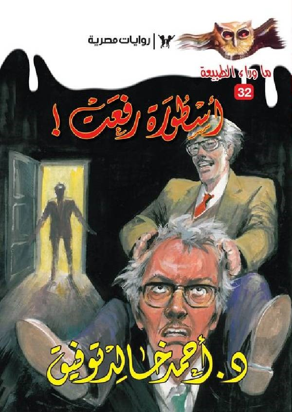

Writer: Ahmed khaled tawfik:
.jpg) Who is Ahmed khaled tawfek?
Ahmed Khaled Tawfik is an Egyptian physician, writer, author, and translator.
Born on June 10, 1962, he is the first Arab writer in the field of horror literature.
The most famous in the field of youth literature, fantasy, and science fiction.
He was nicknamed "The Godfather".
Among the most famous sayings of the Godfather:
I don't think there are many who want to know something about the author. I consider myself without any humility a person who is boring to an infuriating extent.
I certainly did not participate in the assassination of Lincoln and did not devise a plan to defeat the Mongols at Ain Jalut.
I don't keep a body in the basement trying to move it with mental powers, and I haven't devoured a child in a long time.
I have always wondered about that miracle that makes a person feel proud or arrogant. What does this genius know about legitimate inheritance laws?
Can he recreate without a single mistake the oil drop experience of Millican? Can he install a circuit in parallel?
How many parts of the Qur'an are memorized? What is his information about Submarine Command?
Can he break a coconut between his forearm and humerus? How long can he stay underwater?
The bottom line is that we are lucky that we have not grown ashamed of a time of excessive ignorance and weakness.
The journey to the top.
His literary journey began with the writing of the series Paranormal, and
although horror literature was not prevalent at the time, the series achieved great success,
and was well received by the public.
What encouraged him to complete it. Which turned into a serial story.
Who is Ahmed khaled tawfek?
Ahmed Khaled Tawfik is an Egyptian physician, writer, author, and translator.
Born on June 10, 1962, he is the first Arab writer in the field of horror literature.
The most famous in the field of youth literature, fantasy, and science fiction.
He was nicknamed "The Godfather".
Among the most famous sayings of the Godfather:
I don't think there are many who want to know something about the author. I consider myself without any humility a person who is boring to an infuriating extent.
I certainly did not participate in the assassination of Lincoln and did not devise a plan to defeat the Mongols at Ain Jalut.
I don't keep a body in the basement trying to move it with mental powers, and I haven't devoured a child in a long time.
I have always wondered about that miracle that makes a person feel proud or arrogant. What does this genius know about legitimate inheritance laws?
Can he recreate without a single mistake the oil drop experience of Millican? Can he install a circuit in parallel?
How many parts of the Qur'an are memorized? What is his information about Submarine Command?
Can he break a coconut between his forearm and humerus? How long can he stay underwater?
The bottom line is that we are lucky that we have not grown ashamed of a time of excessive ignorance and weakness.
The journey to the top.
His literary journey began with the writing of the series Paranormal, and
although horror literature was not prevalent at the time, the series achieved great success,
and was well received by the public.
What encouraged him to complete it. Which turned into a serial story. 
His most famous works:
The series is inspired by the series of novels Supernatural by the late writer Ahmed Khaled Tawfik.
Rifaat Ismail's journey of doubt is presented through 6 episodes full of excitement and mystery,
each centered around one of the famous legends in the novels "Paranormal". Each episode will be a standalone film,
yet all episodes are interconnected within a common element, "House of Khadraoui", the main driver of events in the first season.
The embodiment of the fictional legend in the series.
The series stars: Ahmed Amin, Razan Jamal, Aya Samaha, Samaa Ibrahim and Rushdi Al-Shami.
Vision and creative supervision: Amr Salama, directed by: Amr Salama and Majed Al-Ansari
Where it got a very large audience turnout and became one of the best series released in that period.
And one of the best sentences inside it was Murphy's Laws.
Such as: Law No. 16
"All attempts to escape official summonses fail."
Refaat Law No. 65
"Sometimes the disappearance of the monster is more terrifying than the monster itself"
Utopia novel.  Ahmed Tawfik is the author of novels that have achieved wide public success, the most famous of which is Utopia in 2008,
which was translated into several languages, and republished in later years.
One of the best sentences in the novel Utopia:
Ahmed Tawfik is the author of novels that have achieved wide public success, the most famous of which is Utopia in 2008,
which was translated into several languages, and republished in later years.
One of the best sentences in the novel Utopia:
Salim Bey told me, "You read a lot. You're crazy!" ... I told him that reading for me is a cheap kind of drug.
I do nothing with it except unconsciousness.
In the past, imagine this, they used to read in order to gain awareness! ...
I told her that people should only get married to bring the world to someone better...
A child more beautiful than you, richer than you, stronger than you.
What is the point of miserying marrying unhappiness? Flames of clay?
What new are we going to offer the world other than more misery?
The departure of the Godfather.
Ahmed Tawfiq died on April 2, 2018 at Demerdash Hospital on the same day he had a
cauterization of the heart to treat the fibrillation he was suffering from,
but his heart stopped several hours after waking up
from the operation due to sudden ventricular fibrillation.